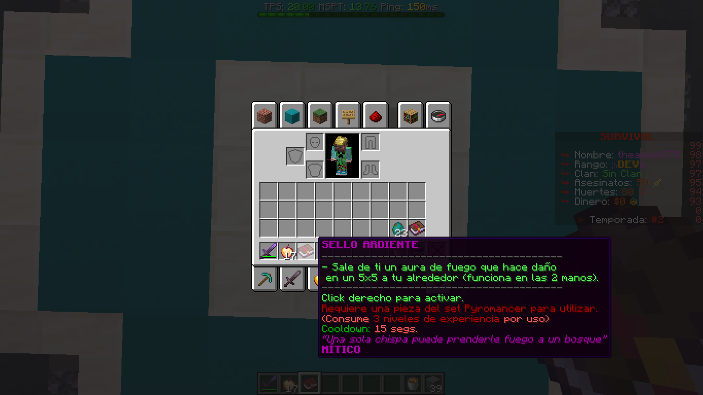
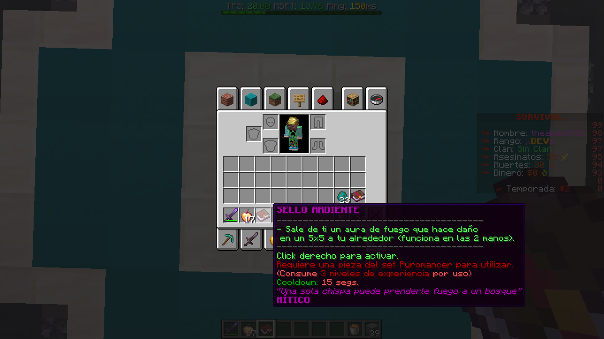

Minecraft related
 

Custom Items
I can make customizable items with a lot of options involved.


Dungeons
I also made dungeons with a lot of custom options, like fully custom bosses, with a lot of abilities, lootchests, checkpoints, lives system, custom tasks to do at the dungeon, like finding an item, throwing items into hoppers, breaking a wall that has hp, and much more!

Multiple Koths System
I can also make a multiple koths system, with all of them running at the same time, giving different rewards, and much more stuff!
And much more things!
That are some things that i recently made, but I can make a lot more stuff!
I can config custom menus, cosmetics, configure proxies and servers internally, and almost everything that you can think about!
And I also code plugins, in my github you can find some of them, but most of the public plugins that I have in my GitHub are made a while ago while I was learning, so the code might not be that good. For example, a recent plugin that i made to a customer is a plugin that execute some commands when a player stays X amount of time in a WorldGuard region without leaving, mainly to reward players for staying AFK in specific regions as my customer said. But I can do a lot more things!